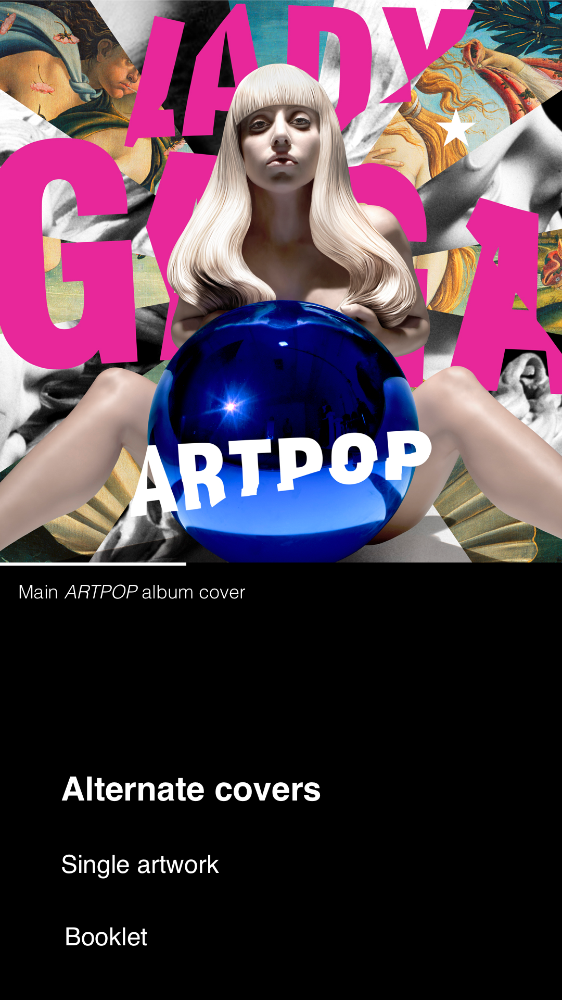
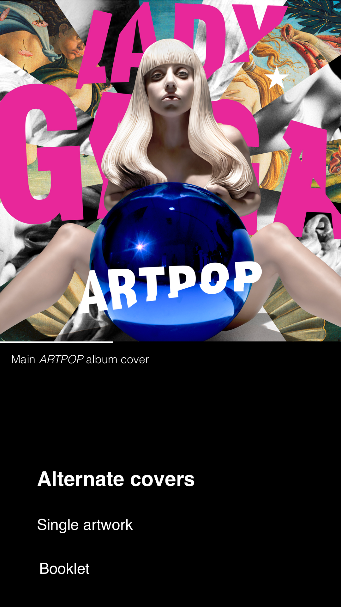
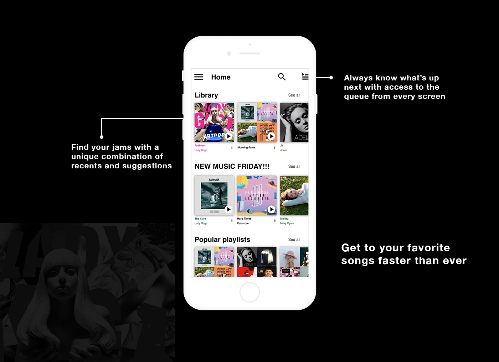
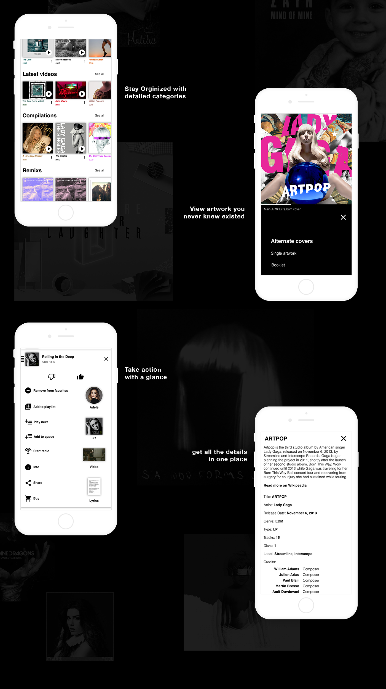
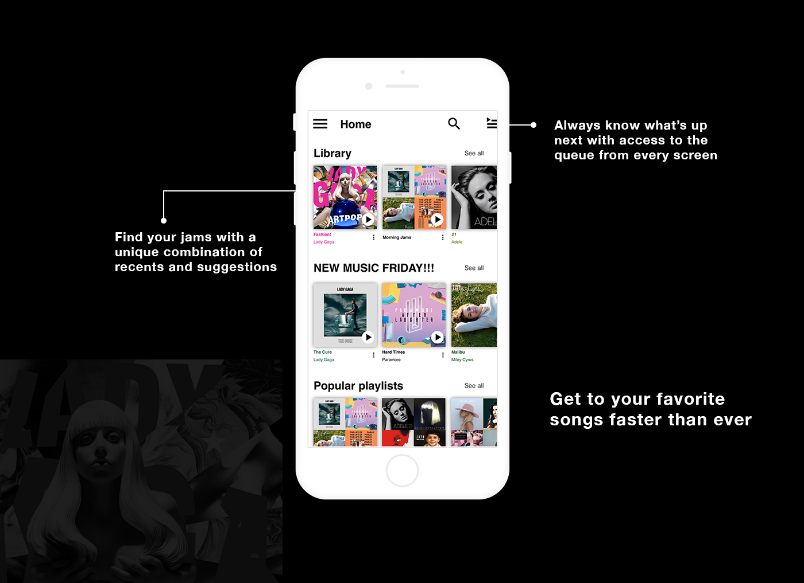
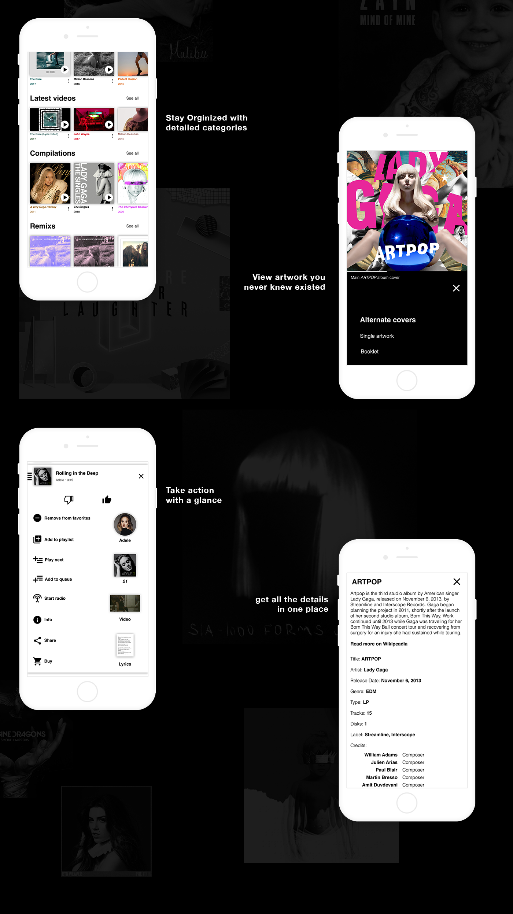

Music +
Independent project — Summer 2017
Skip to result – View on Behance
Background: This project started quite some time ago when I was choosing a streaming service. Each one seemed to offer something the others didn’t, so I began to think about what the optimal streaming service would look like. The service needed to have enough metadata to answer simple questions a user might have, similar to the way we use IMDB. Along with a wealth of metadata the service needed to be organized in a way that lets users know what type of album they're looking at before they even read its name. Users must also be able to use the service with ease, meaning menus should be clear and navigating to the screen you need should be fun and intuitive. Finally, cover art should be front and center, and not encroached upon by the aesthetic of the app.
Organization: Google play music is particularly unorganized. The service bunches everything that resembles an album into one category, making it difficult to determine what’s a full studio album and what's a single. Other services do a little better of a job by splitting albums up into sub categories, but they’re all plagued by multiples of a song or album, for slightly different releases. There's no reason besides laziness that we need the single to be separate from the album version, the explicit version, and the version on the deluxe album. In addition to using sub categories for albums, my music app only uses one entry for every version. If users want to hear the clean version they can go into the settings and only show the clean version. If they don’t want to listen to the bonus tracks they can disable them.
Navigation: In a music app there are quite a few actionable items in the menus, but most music apps just use a long list to convey these actions. I wanted to break up that list into a clear division of tasks. The images on the right side of the menu take users to related content, while the items on the left are actions directly related to the song itself. The imagery and icons in the menu make differentiating options easier for users.
Another area where music apps leave room for improvement is in allowing users to get to their favorite music quickly. While music discovery is an important part of a streaming service, users are more often just looking for their favorite playlist. My music app uses preview rows to highlight relevant content for categories like new music, popular playlists, and top hits, in addition to showing recently played/added content under the library page.
Gestures are also under used in music apps, particularly with Spotify. A swipe up to see the controls for a currently playing song should be a given in every music app. My app goes a step further, by putting the menu below the controls so users can swipe up for quick access. A swipe left or right over the now playing controls will also change the song, and a left or right swipe over the album art will show users any variations on a cover as well as single art covers. A swipe left gesture from the edge will open the queue anywhere in the app. From the queue users can swipe left again to remove a song from the queue or right to close the queue. From the album and artists views users can zoom in and out to see more or less content at once in order to quickly find the music they're looking for.
Visuals: Album art is one of my favorite parts of music, and mosts services don't give it enough attention. Google play music is the worst offender with its zoomed in album art, preventing you from viewing the whole cover at scale. The organization structure of many music apps does no favors for artwork either. Once an album is released a songs single art is basically thrown away. Because there is only one copy of a song in my music app, there can be various covers for that one song, and this app would allow users to see all the covers a song has. The app also uses the colors from album art to color text and backgrounds on certain pages in order to give an artist a more unique space.
 

Testing: In the first round of testing I mainly wanted to test users ability to find the menu by scrolling down and to find the queue. I also asked users to complete more basic tasks, such as going to the home page, library, or finding a songs lyrics. I chose to test with three people with different levels of experience using technology.
The first was the least experienced person. They took while to get to things if at all, and were hesitant to click anything. Common patterns were even difficult for them, but manageable with help. The key features I was testing were the hardest for them. From this test I determined that some features were more advanced than others.
The second person I tested had a better understanding of apps in general, but were by no means an advanced user. They were more likely to click around to discover what things do. The common pattern tasks were easy for them, but the key features took more time to find.
The third person was the most technologically adept. They were able to navigate the app with mostly no problem. The only tripping points were again, finding the menu, and the queue. They didn’t realize they could scroll down, and they had to compare icons to be sure which one was the queue. It was clear that there was a slight learning curve here, but they would certainly get things in the end with very little issue.
After testing it was clear that finding the menu and queue were challenging for users. Most did not think they could scroll down, and did not know what the queue icon meant. To combat this I changed the queue icon and added a three dot icon that scrolls down to the menu. After making these adjustments, I tested again with the novice user. They didn’t remember too much about the app, but had likely retained something because they were able to navigate the app more easily than the first time. When it came to testing the menu they identified the three dot icon quickly, and were able to find the queue easily. I also tested with two younger people who had not seen the app before, and both were able to navigate the updated design with ease. These results leads me to believe the minor improvements worked, and users can learn to use the app in a short amount of time.
 


